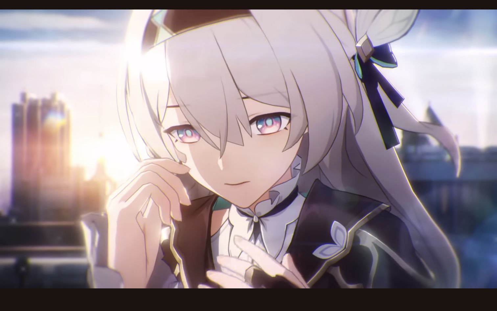
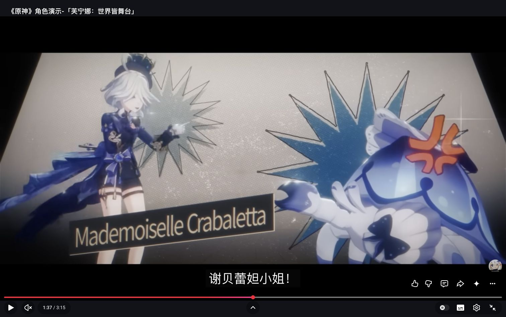

最近季度：2026夏季
Anime Corner · 10月5日统计 · 15,117参与者
井上织姬 / 爱蜜莉雅 / 黄玲琳 · 查看投票与范围 ↗
首轮人气与视觉参考保留。用户已同意A/B继续，当前服装搭配见新的服装研究；下方C为历史候选，暂不推进。当前已选择A1，平涂二次元V4已生成；本板保留首轮研究。
Anime Corner · 10月5日统计 · 15,117参与者
井上织姬 / 爱蜜莉雅 / 黄玲琳 · 查看投票与范围 ↗
Anime Trending · 小栗帽 / 猫猫 / 喜多川海梦
不同社区与时期分别使用；不合并为全球排名。年度来源 ↗

图片未载入时，可打开下方官方来源。

图片未载入时，可打开下方官方来源。

图片未载入时，可打开下方官方来源。

图片未载入时，可打开下方官方来源。

图片未载入时，可打开下方官方来源。

图片未载入时，可打开下方官方来源。

图片未载入时，可打开下方官方来源。
借鉴干练剪裁、材质层次、少量强调色。
转化柔化眼神，取消武器；深发色需检查黑底分离。
© HoYoverse；PlayStation Blog官方署名文章查看官方来源 ↗
图片未载入时，可打开下方官方来源。
借鉴角色、空间、声音和状态动作一起设计。
转化1月Kira是历史参照；当前人格列AVA／SUMI／NIKO，仍在开发。
© Razer；当前官网设备图，不是Kira角色图查看官方来源 ↗浅灰银发 / 灰蓝眼睛 / 现代短外套
平静、敏锐，有细微俏皮反应。让脸和发型先被记住。
#E8E5DE#303744#8BA6B0#C98D84深蓝黑发 / 灰青眼睛 / 干练都市剪裁
更有办事能力的气质，黑底下需保住头发和衣服的层次。
#222D3C#6E9597#D3D2CA#D9A16F暖栗发 / 蜂蜜棕眼睛 / 奶油色日常服
轻快、亲近，控制待机兴奋程度，保留工作伙伴的身份。
#F0E4D2#655049#C8877A#C4A36D